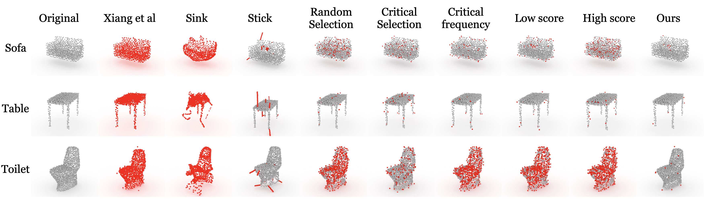
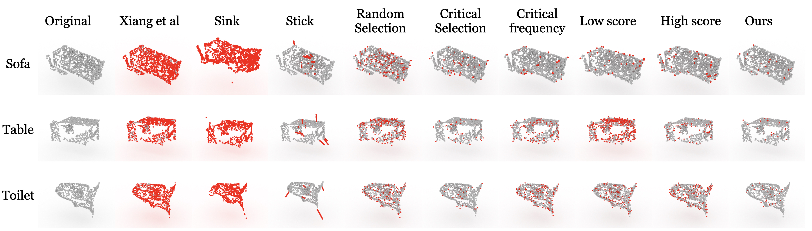

1Hong Kong University of Science and Technology
2VinAI Research 3VinUniversity
4Deakin University
International Conference on Computer Vision (ICCV), 2021

Modelnet40

ScanObjectNN
Abstract
With recent developments of convolutional neural networks,
deep learning for 3D point clouds has shown significant progress in various
3D scene understanding tasks, e.g., object recognition, semantic segmentation.
In a safetycritical environment, it is however not well understood how
such deep learning models are vulnerable to adversarial examples.
In this work, we explore adversarial attacks for point cloud-based neural networks.
We propose a unified formulation for adversarial point cloud generation that can
generalise two different attack strategies. Our method generates
adversarial examples by attacking the classification ability of point cloud-based networks
while considering the perceptibility of the examples and ensuring the minimal level of point manipulations.
Experimental results show that our method achieves the state-of-the-art performance
with higher than 89% and 90% of attack success rate on synthetic and real-world data respectively,
while manipulating only about 4% of the total points.
@article{jy-minimumpointattack-iccv21,
title = {Minimal Adversarial Examples for Deep Learning on 3D Point Clouds},
author = {Jaeyeon Kim and Binh-Son Hua and Duc Thanh Nguyen and Sai-Kit Yeung},
booktitle = {International Conference on Computer Vision (ICCV)},
year = {2021}
}
Acknowledgements
This research project is partially supported by an internal grant from HKUST (R9429).